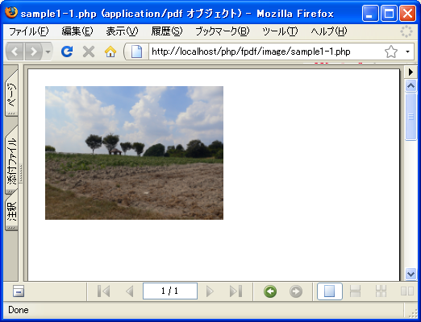

- Home ›
- FPDFを使ったPDF作成 ›
- 画像の出力
Imageメソッドによる画像出力
PDFドキュメントへ画像を出力する方法を確認します。FPDFクラスで用意されているImageメソッドを使います。
Image(string file, float x, float y [, float w [, float h [, string type [, mixed link]]]])
ページに画像を出力します。左上の角の座標と、最低でも１つの寸法が指定さ れている必要があります。 パラメータ: file 画像ファイル名 x 左上の角のx座標 y 左上の角のy座標 w 画像の幅(width) h 画像の高さ(height) type 画像フォーマット link URLまたはAddLink()メンバ関数によって返された識別子
1番目の引数に画像のファイル名を指定します。指定可能な画像フォーマットとPNGとJPEGです。
2番目と3番目の引数で画像を出力する位置を表す座標を指定します。
4番目と5番目の引数で画像のサイズを指定します。単位はMBFPDFクラスのコンストラクタで指定した寸法の種類です。幅または高さだけを指定した場合(又は0を指定した場合)は縦横比率が変わらないように指定しなかった方のサイズを調整します。両方指定しなかった場合は72dpi(dpi=Dots Per Inch、1インチ=2.54cm)のイメージサイズとしてサイズが計算されて出力されます。
6番目の引数には画像フォーマットの種類を指定します。指定可能な値は「JPG」「JPEG」「PNG」のいずれかです。省略された場合は画像ファイルの拡張子から自動判断されます。
7番目の引数には画像に対してリンクを貼る場合に、URLまたはリンク識別子を指定します。詳しくは「リンクの設定」を参照して下さい。
実際には次のように記述します。
<?php
require('fpdf/mbfpdf.php');
$pdf = new MBFPDF();
$pdf->AddMBFont(GOTHIC ,'SJIS');
$pdf->AddPage();
$pdf->SetFont(GOTHIC,'',20);
$x = $pdf->getX();
$y = $pdf->getY();
$pdf->Image('sample.png', $x, $y, 100.0);
$pdf->Output();
?>
この場合は現在の位置を左上座標とする位置に画像を出力します。
サンプルプログラム
では簡単なサンプルで試してみます。
<?php
require('fpdf/mbfpdf.php');
$pdf=new MBFPDF('P', 'mm', 'A4');
$pdf->AddMBFont(GOTHIC ,'SJIS');
$pdf->AddPage();
$pdf->SetFont(GOTHIC,'',20);
$x = $pdf->getX();
$y = $pdf->getY();
$pdf->Image('scape.png', $x, $y, 100.0);
$pdf->Output();
?>
上記のファイルをWWWサーバのドキュメントルート以下に設置しブラウザからアクセスすると次のように表示されます。

( Written by Tatsuo Ikura )

著者 / TATSUO IKURA
初心者～中級者の方を対象としたプログラミング方法や開発環境の構築の解説を行うサイトの運営を行っています。